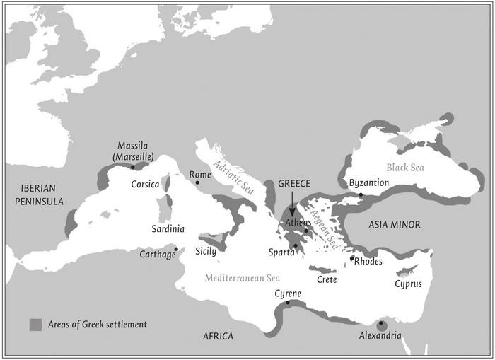
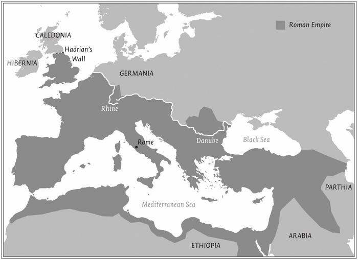
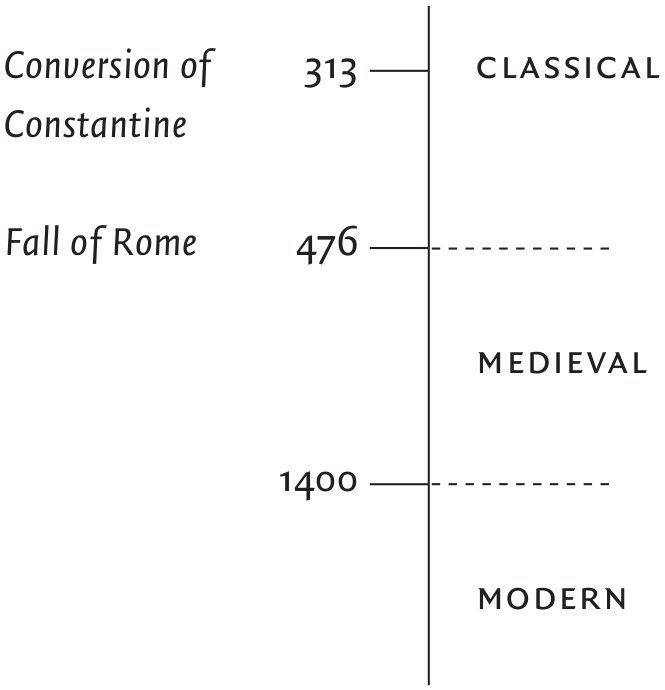
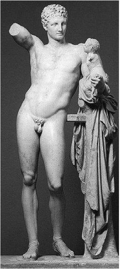
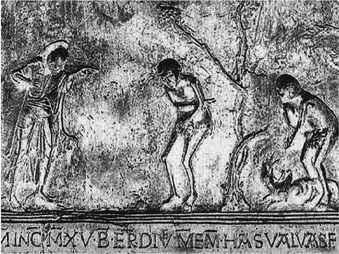
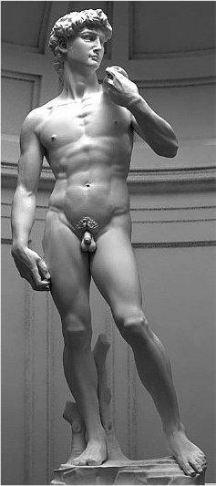
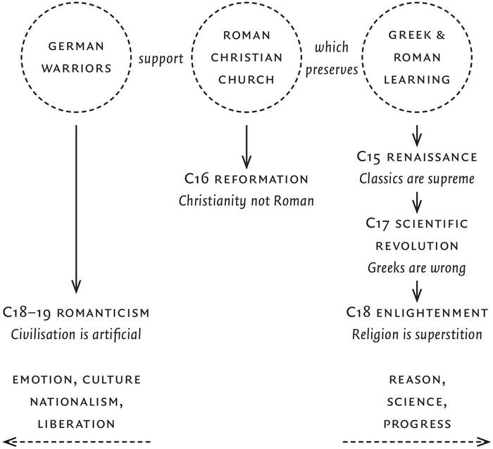

The Shortest History of Europe
Table of Contents
1 目录
| 第一章 | 古典时期到中世纪 | Europe Classical and Medieval |
|---|---|---|
| 第二章 | 近代欧洲 | Europe Modern |
| 间奏篇 | 古典情怀今犹在 | Interclude. The Classic Feeling |
2 第一章
科学本身就是欧洲的发明之一。
Science was a European invention.
在欧洲文明发端之初，它的组成元素有三：
- 古希腊和罗马文化。
- 基督教――犹太教（犹太民族之宗教）的一个奇特分支。
- 对罗马帝国进行侵略的日耳曼蛮族的战士文化。
At its beginning European civilisation was made up of three elements:
- the culture of Ancient Greece and Rome
- Christianity, which is an odd offshoot of the religion of the Jews, Judaism
- the culture of the German warriors who invaded the Roman Empire.
2.1 一
在希腊的辉煌时期，它并不是一个单一制国家，而是由数个小聚落分区统治，也就是今天我们所称的城邦。民主政治的原型就是从这些小城邦里萌生，但它并不是 代议式的民主 ，用不着选举国会议员。所有的男性公民群聚于某个场所就公共事务进行讨论，法律和政策的制定都透过投票表决。
In its great days Greece was not one state; it was made up of a series of little states: city-states, as they are now called. It was in these small city-states that the first democracies emerged. They were not representative democracies; you did not elect a member of parliament. All male citizens gathered in one place to talk about public affairs, to vote on the laws and to vote on policy.
随着城邦人口日益增长，希腊开始派人到地中海其他地区去开拓殖民地。在当今的土耳其、北非沿岸，甚至远至西班牙、法国南部和意大利南部，都找得到希腊人安家落户的踪迹。在意大利这里，罗马当时只是今日罗马城周遭的一个小村落，与希腊人首度遭逢，进而向他们学习。
As these Greek city-states grew in population, they sent people to start colonies in other parts of the Mediterranean. There were Greek settlements in what is now Turkey, along the coast of North Africa, even as far west as Spain, southern France and southern Italy. And it was there ― in Italy ― that the Romans, who were then a very backward people, a small city-state around Rome, first met the Greeks and began to learn from them.

Figure 1: Ancient Greek cities and colonies.
罗马人慢慢建立起一个庞大帝国，连希腊和希腊所有的殖民地都在它的疆域范围之内。罗马帝国涵盖了整个地中海；但它的领土只有一部分属于今日的欧洲，大部分是在土耳其、中东和北非地区。
In time the Romans built a huge empire that encompassed Greece and all the Greek colonies. The empire encircled the Mediterranean Sea; it included only part of what is now Europe and much that is not Europe: Turkey, the Middle East, North Africa.

Figure 2: The extent of the Roman Empire around the second century AD.
2.2 二
在他们眼里，几何学是引导人类认知宇宙本质的一个途径。当我们环顾四周，被眼前形形色色、丰富多样的世界吸引，所有事物都随机又漫无章法地出现。但希腊人相信，这一切都可用简单的道理来解释。这些多元样貌的背后，必然有种简单、规律、有逻辑的原理在支撑，像几何学就是。
They saw geometry as a guide to the fundamental nature of the universe. When we look around us, we are struck with the variety of what we see: different shapes, different colours. A whole range of things is happening simultaneously ― randomly, chaotically. The Greeks believed there was some simple explanation for all this. That underneath all this variety there must be something simple, regular, logical which explains it all. Something like geometry.
我们现在所认知的科学始于四百年前的 17 世纪科学革命，现代科学一开始就推翻了当时依然是主流和权威的希腊科学的中心教义，但它之所以能推翻希腊科学，遵循的正是这种希腊灵感：答案应该简单、符合逻辑、能以数学表达。
When science as we know it began 400 years ago, it began by upsetting the central teachings of Greek science, which remained the authority. But it upset the Greeks by following this Greek hunch that the answers would be simple and logical and mathematical.
2.3 三
犹太人一直相信，宇宙间只有一个真神，这是极不寻常的观点，希腊人和罗马人崇奉多神，这比较普遍。犹太人还有个更异乎寻常的信念，他们认为自己是上帝的选民，所以这个唯一真神会对他们特别照顾。因此，犹太人必须遵守上帝的律法作为回报，这套律法的基石是「十诫」。
The Jews came to believe that there was only one god. This was a very unusual view. The Greeks and Romans had the more common belief that there were many gods. The Jews had an even more extraordinary belief that this one god took special care of them; that they were God's chosen people. In return, the Jews had to keep God's law. The foundation of the law was the Ten Commandments.
耶稣一些徒众对他寄予厚望，希望他能领导起义，对抗罗马。他的敌人设计于他，想骗他说出带有谋反意图的话。他们问，我们应该纳税给罗马吗？耶稣回答，拿一个银钱给我看――这上头是什么图案？对方回答，是恺撒的像。耶稣就说：「恺撒的，就应归给恺撒，天主的就应归还天主。」
Some of the followers of Jesus looked to him to lead a revolt against Rome. His opponents tried to trick him into a declaration to this effect. Should we pay taxes to Rome, they asked him. Hand me a coin, he said ― whose image is on it? Caesar's, they replied. Jesus said, "Give to Caesar what is Caesar's and to God what is God's."
当时有许多讲道人和先知，耶稣只是其一。犹太教的领导阶层对这些讲道人心生疑忌，跟罗马人联手合作，并将耶稣处以死刑的也是这些犹太领袖。
Jesus was only one of many teachers and prophets at this time. They aroused the suspicion of the leaders of the Jewish faith, and in Jesus' case the leaders of the Jews co-operated with the Romans in having Jesus executed.
只要相信耶稣，你就能够得救，这样的教义是只对犹太人有效，还是所有人类共有？耶稣死后，他的跟随者对这个问题意见分歧。传统派主张，唯有先变成犹太人，遵奉《旧约》中针对犹太人订下的所有严格规定，你才有可能成为基督徒。当初如果这一派获胜，今天的基督教很可能就只是犹太信仰的一个小旁支而已，甚或已经灰飞烟灭，就算不灭绝也势必无足轻重。结果胜出的是另一方。他们说，这是一种完全不同的崭新宗教。你不必先变成犹太人，所有法规都可以置诸脑后，基督已经把我们从那些戒律当中解放出来；他关于爱的教诲凌驾于一切律法之上。这是早期基督教会一位伟大传教士保罗的观点，有人甚至尊保罗为基督教的鼻祖，因为耶稣死的时候，这个信仰还只是犹太人的家务事。耶稣是犹太人，他的徒众也是，有些人希望就这样保持下去，而 因为保罗确凿地指出这是所有人的宗教，自此而后，基督教就成了一种世界性的宗教 ――至少开启了这样的可能。接下去的三百年间，它被广为传播，在罗马帝国的每个角落开花结果。
If you believed in Christ you could save yourself. Was this religion just for the Jews or was it for everyone? Jesus' followers after his death were divided on this question. The traditionalists said that you could only become a Christian if you became a Jew first and so followed all the strict rules that were laid down for the Jews in the Old Testament. If this path had been taken, Christianity would have remained a very small sect of the Jewish faith and probably have died out or certainly been of no great significance. The other side won, the side that said, this is a totally new religion. You don't have to become a Jew first; all the restrictions of the law can go; Christ has set us free from all that; his teaching about love surpasses anything that the law could offer. This is the view of Paul, the great early missionary of the church and, according to some, the founder of Christianity, because when Jesus died this faith was a Jewish affair only. Jesus was a Jew, his followers were Jews, some of whom wanted to keep it that way. It was Paul who most clearly said this is a religion for everyone and so from that time Christianity became, potentially at least, a world religion. Within 300 years it had spread right throughout the Roman Empire.
2.4 四
入侵罗马帝国的日耳曼蛮族。他们原本住在北方边界处，在公元 400 年之后大举入侵，到了公元 476 年，西罗马帝国已被他们毁灭。欧洲文明这个混合体，就在法国、西班牙和意大利这些地方粗具了它的雏形。
The German warriors who invaded the Roman Empire. They lived on the northern borders and in the 400s they flooded in. By 476 AD they had destroyed the empire in the west. It was here in France, Spain and Italy that the mixture of European civilisation first took shape.
这些蛮族粗野不文，没有留下任何文字记载，我们对他们在侵略帝国之前的事迹所知极少。这些蛮族对和平毫无胃口，在危难中博得名声比较容易，更何况，要养得起旗下的战士大军，唯有凭借暴力和打仗一途。
The Germans were illiterate and left no written records, and so we have very little information about them before they invaded. The Germans have no taste for peace. Fame is easier won among perils and you cannot maintain a large body of companions except by violence and war.
2.5 五
希腊人的观点：这是一个简单、符合逻辑、能以数学表达的世界。基督教的观点：这是个邪恶的世界，唯有耶稣能拯救它。 日耳曼蛮族的观点则是：打仗是好玩的事。这些看似天差地远的元素组合在一起，造就了欧洲的文明。
The Greek view was that the world is simple, logical and mathematical. The Christian view was that the world is evil, and Christ alone saves. The German warriors' view was that fighting is fun. It is this unlikely mixture that comes together to make European civilisation.
2.6 六
罗马人是很包容的。他们所统治的帝国是由许多种族和宗教所共同组成。你可以自己管理自己，你可以信奉自己的宗教，只除了一点：你必须对皇帝敬拜，因为罗马人相信，君主的地位与神明无异。但基督徒不肯这样做，因为他们跟犹太人一样，说自己只能崇拜唯一的真神。犹太人不肯对君王致敬，罗马人通常会放他们一马，因为在罗马人眼里，犹太人只不过是个古怪、反复无常但面目容易辨识的古老民族。对比之下，基督徒却在奉行一种新宗教，而且什么人都可能是基督徒，什么地方都可能有基督徒。罗马人认为基督徒是颠覆分子，必须铲除而后快。
The Romans were usually very tolerant. They ruled an empire which was composed of a variety of races and religions. You could govern yourself. You could practise your own religion, with this exception: you had to sacrifice to the emperor. The Romans believed the emperor was something like a god. The Christians wouldn't do it because, like the Jews, they said they must worship only one god. The Romans usually excused the Jews from honouring the emperor. They thought of them as cranky and volatile, but recognisable, an ancient people. By contrast, Christians were following a new religion and Christians could be anyone, anywhere. The Romans thought of them as subversives who had to be eliminated.
公元 313 年，君士坦丁大帝成为一位基督徒，或者说至少公开表态支持基督教会。他认为基督教的神可以眷顾他，让他的帝国超越其他所有帝国。五十年后，另一位信奉基督教的君主更禁止异教，独尊基督教为国教。如此这般，在耶稣于罗马帝国一个纷争不断的偏远省份传教四百年后，基督教成了这个帝国正式也是唯一的宗教。这是三大元素的第一个连结：罗马帝国变成了基督教的天下。
An emperor, Constantine, in 313 AD became a Christian or at least gave official support to the Christian churches. He thought their god might look after him and the empire better than any other. Fifty years later another Christian emperor outlawed all other religions. Four hundred years after Jesus taught in a troubled and distant province of the Roman Empire, Christianity became the official and sole religion of the empire. This is the first link between the three elements: the Roman Empire becomes Christian.
一开始，基督教团体是在私人屋宅里聚会，如今，三四百年之后，他们已有完整的层级组织。这个教会有它自己的法律制度，也设有法庭、监狱以执行法律。罗马帝国灭亡后，教会幸存下来――俨然一个独立政府。
At first, groups of Christians had met in private houses. Now, three or four centuries later, there was a complete hierarchy of full-time paid officials. The church had its own system of law and its own courts and gaols to enforce its law. When the Roman Empire collapsed, the church survived ― it was like a government in itself.
2.7 七
罗马帝国崩灭后，教会把希腊和罗马的学术保存了下来。 古希腊和罗马的作家、哲学家和科学家全都是异教徒，不是基督徒。 基督教会为什么要为这些人如此费事呢？基督徒并没有自订一套教育体制，因此，在基督教会下令将这套信仰制度化之初，非常仰赖熟谙希腊罗马传统的高级知识分子的协助。这些人利用希腊的哲学和逻辑学替基督教教义解释、辩护。这些希腊哲学家可以作为引导，让大众走向真理、辨明真理。因此，虽然他们是异教徒，基督教会还是保存了他们的著作并善加利用。这是第三个连结： 基督教会将希腊和罗马的智识成就保存下来。
After the Roman Empire collapsed, the church preserved the learning of Greece and Rome. All the writers, philosophers and scientists of ancient Greece and Rome were pagan, not Christian. Why would the Christian church bother with such people? The Christians did not set up their own system of education, so when Christianity began to order and systematise its beliefs it relied on educated people who were steeped in the Greco-Roman tradition. They used Greek philosophy and Greek logic to explain and defend Christianity. tTe Greek philosophers could be used as a guide to the truth and to argue about the truth. So although they were pagan, the church preserved and used their writings. This is the third link: the church preserves Greek and Roman learning.
日耳曼蛮族侵犯罗马帝国的时候，并没有摧毁它的意图。他们的目的在于攻城略地，想占夺最肥沃的土地以安家落户。他们愿意承认罗马君主的统治权。问题是，在公元 400 年之后，太多蛮族来到，侵占了太多土地，罗马的君王已落得无辖地可治。事实上，罗马帝国之所以走到尽头，就是因为疆土已无剩余，没有领地可以统治了。日耳曼蛮族们发现必须开始统治自己所占领的社会。他们目不识丁，在他们所制造出的混乱中，一息仅存的罗马政权终于断了气，而商业交易和所有城镇都在萎缩。各拥武装的蛮族首领们纷纷自立为王，建立起小邦小国；王国之间自相残杀。一直要到数百年后，现代国家的雏形――法国、西班牙和英国――才终于出现。
When the Germans invaded the Roman Empire they did not intend to destroy it. They were coming for plunder, to get the best lands and to settle down. They were happy to acknowledge the emperor's rule. But the trouble was that in the 400s so many Germans came, and took so much land, there was nothing left for the emperor to control. In effect the Roman Empire came to an end because there was nothing left to rule. The German warriors found that they had to run the societies they had invaded. They themselves were illiterate; in the chaos that they had caused, the remaining Roman administration collapsed; trade and the towns shrank. The warrior chiefs set themselves up as kings and created little kingdoms; they fought among themselves. It was many centuries before the outlines of the modern states of western Europe appeared: France, Spain, England.
2.8 八
这位已不光是蛮族首领的日耳曼人现在已化身为国王，他把土地分封给他的战士，而这些战士则化身为贵族，条件是一旦国王需要军队，这些贵族就得供应。私有财产变得神圣不可侵犯，那些贵族已把借着条件交换得来的土地变成了私有财产。这对政府来说永远是个束缚，因此，虽然欧洲国王的权力日增一日，却不曾演变成东方的专制君王。
Instead of being the chief, the German warrior now turned himself into a king and allotted land to his companions, who were turning themselves into the nobility, on the condition that when the king needed an army the nobles would provide it for him. Private property became sacrosanct; the nobles had turned land held on condition into private property. This always put a limitation on governments, so that though the powers of European kings grew they never became like oriental despots.
「并非所有东西都归国王所有」，是欧洲政府思维的基石。从私有财产权出发，衍生出人权观念，是西方价值的核心。 政府权力必须有所限制，这样的观念之所以勃兴，其实是因为这些政府从一开始就处处受限。
"Not everything is the king's" was the foundation of European thinking about government. From the right to private property derives the notion of individual rights, which is a central part of the Western tradition. The notion that government must be limited arose because at the beginning government in fact was extremely limited.
2.9 九
罗马帝国崩塌后，教会是唯一幸存下来的机构。当这帮战士兵临城下打算掠夺之际，前去打交道的常是基督教的主教。这是一群很特别的征服者：他们接受了被征服者的宗教。这是最后一个连结点：日耳曼蛮族支持基督教。
The church was the only institution which survived the collapse of the Roman Empire. It was often the bishop who went out to treat with the warrior band as it arrived bent on plunder. These were conquerors of a special sort: they accepted the religion of the people they had conquered. This is our last link: German warriors support Christianity.
这是个非常怪异的组合，他们并不是自然而然的结盟，是个不稳定的组合。它最后终于瓦解，但在分崩离析之前，它维系了将近千年之久――从公元 476 年罗马帝国崩灭开始，直到 1400 年左右。历史学家称这段时期为中古时期或中世纪。以这种观点来看，欧洲历史可分成三个时代：古代或称古典时期、中世纪、近代。
It is a very odd mixture. These are not natural allies. It is an unstable mixture. Eventually it will break open but it held together for about a thousand years ― from around 476 AD, the date of the fall of the Roman Empire, to about 1400. This is the period historians call the Middle Ages or the medieval period. This gives the three eras of European history: ancient or classical; medieval; modern.

2.10 十
自从君士坦丁大帝改信基督教并订其为正式国教后，这个宗教对于暴力的想法也开始有了转变。既然政府不可能不打仗，教会如果希望得到政府支持，就得点头同意，认可政府有时可以因为公平正义而出兵打仗。教会鼓励他们去攻打非基督徒――这个理由确实再正当不过。教会也鼓励十字军远征，前往已落入伊斯兰教手中的东方圣地。
Once Christianity had been taken up by Constantine and become an official state religion it had to change its views about violence. Governments must fight, and if the church wanted the support of governments it had to agree that governments can sometimes fight justly. The church encouraged him to fight non-Christians ― that was a very good cause indeed. The church promoted the crusades to the Holy Land, which had fallen into Muslim hands.
2.11 十一
基督教会对古希腊和罗马学术进行了积极主动的保存。这些文献能够留存下来，是因为整个中世纪基督教会都在抄写，一再地抄写。当年没有印刷术，书本会腐烂、会枯朽。诸多希腊罗马的珍贵文物之所以留存至今，是拜修道院里的修士之赐，虽然他们常常不知道自己在抄写什么，因此错误百出。
The Christian church preserving Greek and Roman learning. This was an active process of preservation. They have only survived because the church copied and re-copied them right through the Middle Ages. There was no printing; books rot and perish. It was the monks in the monasteries, often not knowing what they were copying ― hence the many mistakes ― who preserved so much of the treasures of Greece and Rome.
中世纪的基督教会对知识生活的把持是如此铺天盖地，以至于竟然没有人看过这些典籍原本的文字。教会的做法是截取它想要的段落，把这些断章取义的点点滴滴汇集起来，再将它和摘自《圣经》的段落编在一起，构筑出一套基督教神学。
The church in the Middle Ages was able to maintain such command over intellectual life that no-one ever looked at this literature in its own terms. Instead the church borrowed what it wanted, reassembled the bits it had taken, put them with passages from the Bible and so constructed a Christian theology.
3 第二章
3.1 一
构成欧洲文明的混合体是个不稳定的组合。公元 1400 年，这个混合体开始分崩离析，它的分裂首先始于文艺复兴。
The mixture that formed European civilisation was an unstable one. Around the year 1400 the mixture began to come apart. This occurred first in the Renaissance.
文艺复兴常被描述为古希腊罗马学术的发现或再发现。它的改变在于不再使用古代知识来支持基督教会的神学，而是有许多学者，主要是在教会体系之外，向往希腊和罗马在创造这些知识时的世界样貌而意图加以拟造。们想回到过去那个非基督教的世界――但这样的世界已被教会藏匿起来。
The Renaissance is often depicted as the discovery or rediscovery of Greek and Roman learning. What had changed was that instead of the church using ancient learning to support its theology, now there were scholars, chiefly outside the church, who were interested in imagining the Greek and Roman world as it existed when the learning was produced. They were thinking themselves back into a previous world that was un-Christian and pagan ― something which the church had hidden.
古典时代之前的人对死后的生命其实没有那么看重，对人在地球上的所作所为关注更多，他们对人的力量和能耐欢喜拥抱，不会满脑子想的尽是人的邪恶堕落。
The ancients had been far more concerned with men and their doings on this earth than with their life after death. The ancients had celebrated man's capacity and powers and they hadn't dwelt on his depravity.
3.2 二
文艺复兴学者并没有直接攻击基督教。他们对基督教采取的观点颇类似于古人的宗教观，那就是：宗教是个基本的存在，大体而言是件好事或者说有存在的必要，只是世界上还有更多的事情值得关注。宗教不该钳制生活和思想的一切。
The scholars of the Renaissance did not directly attack Christianity. They took a view of the Christian religion which was similar to the ancients' own view of religion. That is, religion was something unproblematically present, it was broadly a good thing or a necessary thing, but there were many other things to be interested in. Religion was not to control all of life and thought.
随着文艺复兴来到，欧洲社会开启了它漫长的世俗化过程。 在世俗的世界里，宗教可以存在，但是属于私人事务。宗教不能左右社会，不能强制每个人遵守规定和仪式，也不能宰制思想。
With the Renaissance begins the long process of the secularisation of European society. A secular world is one in which religion might exist, but it exists as private business. Religion doesn't dominate society; it does not impose its rules and rituals on everyone, or control thought.
最开始把希腊和罗马年代称为古典时代的，就是文艺复兴时期的人。他们相信，古人在文学、艺术、哲学和科学方面的成就一直无人超越，未来也无可超越。
The men of the Renaissance were the first to call the age of Greece and Rome the classical era. They believed that the achievements of the ancients in literature, art, philosophy and science were unsurpassed and unsurpassable.
3.3 三
人体是完美的，这个观念是希腊的发明之一。中世纪的人体观是基督教义的具体展现，表示身体是邪恶的，是罪恶的根源。文艺复兴时期的米开朗琪罗所雕刻的大卫像是公认的完美人类形貌；人类是尊贵、高尚和美的化身。从裸体作品到罪恶的赤身露体再回归裸体作品，可以代表古典时期到中世纪再到近代的意涵演变，而这正是文艺复兴对它本身的理解。
The human body as a thing of beauty and perfection is a Greek invention. The medieval view of the human form embodies the Christian teaching that the body is evil, a source of sin. Michelangelo in the Renaissance renders his David as a human form of perfection: man as the embodiment of something high-spirited, noble and beautiful. From nude to naked to nude can stand for the movement from classical to medieval to modern, which is how the Renaissance understood itself.

Figure 3: Hermes by Praxiteles

Figure 4: God confronts Adam and Eve, from the bronze doors at Hildesheim

Figure 5: David by Michelangelo
3.4 四
文艺复兴是中世纪世界遭遇的第一个重大冲击，16 世纪的宗教改革运动是第二个。
The Renaissance was the first great disruption of the medieval world; the second was the Protestant Reformation of the 16th century.
基督教会因为跟着罗马帝国一起成长，各种特性深得罗马真传；在罗马帝国灭亡后，教会的教皇依然屹立，地位俨然君王一般，而各教区的主教和大主教，也犹如古罗马帝国的行政百官。教皇和主教团掌理着整个教会，教义也由他们制订。教会可以给你救赎，可是必须透过它所掌握的东西来运行。你要得救，非得靠神父和主教不可。
The church acquired its Roman features because it grew up within the Roman Empire; when the empire collapsed the church continued with its pope, who was like an emperor figure, and archbishops and bishops, who were like the administrators of the old Roman Empire. The pope and the bishops ruled the church and determined its teaching. The church offered you salvation but only by means that it controlled. You needed priests and bishops in order to be saved.
在中世纪，大部分的神父、主教和大主教加入教会，并不是因为宗教情怀或特别虔诚； 他们加入教会，是因为它是当时最庞大也最有钱的组织。 领圣职就跟今天你去当公务员、进大公司、进政坛或进大学没有两样。这个巧取豪夺、富有又腐败的组织，却也是耶稣教会以及早期基督徒言行记录的保存者。
In the Middle Ages most priests, bishops and archbishops did not enter the church because they were particularly pious or religious; men joined the church because it was the largest and richest organisation of the day. You took holy orders for the same reasons as today you would go into the civil service or a large corporation or politics or to a university. Yet this rich, plundering, corrupt organisation was also the preserver of the teachings of Jesus and the accounts of the early Christians.
耶稣早就警告过拥有财富的危险，《圣经》上对这些又明文记载，因此，教会保存的圣典文献若是落入了反对基督教的批评者之手，很可能会变成引爆的炸药。由于《圣经》是以拉丁文书写，极少人能够阅读。教会说，它是第一个也是最后一个解读《圣经》的权责单位。任何人要是利用《圣经》去批评教会的训示或作为，就会被当成异教徒绑在木桩上烧死。
Jesus had warned against the dangers of riches. All this is recorded in the Bible, so the church's holy document could be dynamite in the hands of its critics. As the Bible was in Latin, very few people could read it. The church said it was the first and final authority for interpreting the Bible. If anyone used the Bible to criticise the teaching or the practice of the church and made a real nuisance of themselves, they were burnt as heretics.
《圣经》中保罗写给罗马教会的书信说：「你只要相信耶稣基督就能得救。」马丁・路德从这句话里做出推论：你根本不必做任何事就能得救，尤其不必对神父的指示言听计从。你只要相信上帝、抱持信仰就行了。 「因信称义」是路德教派的中心教义。只要相信基督，你就能得到救赎。 当然，作为信徒，你会乐于去做让上帝高兴的事，可是，行善积德本身并不能帮助你得救。这是新教和天主教教义的基本分野。罗马天主教强调，行善积德是得救的一个过程；朝圣、施舍钱财给穷人，都有助于你的最终目的――与上帝同在。但马丁・路德说我们唯一能做的就是崇信上帝，而只要我们崇信他，上帝就会让我们得救，这是他做过的应许。
In the Bible Paul's letter to the church in Rome says your faith in Christ will save you. From this Luther deduced that you didn't have to do anything to be saved, in particular you didn't have to put yourself in the hands of the priests and follow their instructions. All you had to do was to believe, to have faith; faith alone will save you is the central Lutheran message. As a believer, of course, you will want to do things to please God. But those works in themselves will not help you to be saved. This is where Protestant and Catholic teaching differed fundamentally. The Catholics emphasised good works as part of the process of salvation. Going on a pilgrimage, giving your money to the poor: that will help your cause with God. Luther said the only thing we can do is to believe and if we believe, God has promised that we will be saved.
宗教改革运动，是以《圣经》的训示和教诲为据，对罗马教廷进行改革的运动。《圣经》是马丁・路德据以批评教会的关键。《圣经》是唯一的权威。和罗马教廷决裂后，马丁・路德第一件事就是把《圣经》翻译成德语，使得人人都能阅读、成为自己得救的主人。拜印刷术发明之赐。马丁・路德对教会的批评和谴责立刻被印成文字，传遍了整个欧洲。教皇要打压马丁・路德的计划还没成形，他的大名已是尽人皆知，每个人都在拜读他的批评文章。
The Protestant Reformation was the movement to reform the church by basing teaching and practice on the Bible. The Bible was the key to Luther's criticism of the church. The Bible was the sole authority. After his break with Rome, the first thing Luther did was to translate the Bible into German so everyone could read it and become the managers of their own salvation. By the the invention of printing, all Luther's criticisms and denunciations of the church were immediately put into print and circulated widely through Europe. Before the pope could organise to defeat Luther, everyone knew of him, everyone was reading his criticisms.
当时的德意志并不是一个单一制国家，它是一个由许多小国组成的邦联。罗马教廷在德意志的影响力要大过在英国、法国。在德意志，教会握有广大的土地，剥削人民、聚敛钱财，各教区的主教也由教皇任命，这些王公贵族全无置喙余地。若是跟着马丁・路德走，他们便可占据教会土地，任命领地内的主教，对罗马停止金钱捐输，于是，这些王族成了马丁・路德的保护者，并在领土内广建路德的新教教会。
Germany was not one country; it was a collection of many states. The church exercised more influence in Germany than in the unified countries of France and England. It held an immense amount of land, collected large sums of money from the people, and the pope appointed bishops without the princes having a say. By following Luther, the princes were able to seize the church lands, appoint their own bishops and stop the flow of money to Rome. The princes became the protectors of Luther and in their realms the Lutheran church began.
3.5 五
在宗教改革运动中，由于再也没有一个统一的权威去诠释《圣经》、监督信仰，新教会不断增设，也不断被淘汰。一百多年间，罗马天主教和新教就这样互相攻伐，甚至不惜兵戎相见。两方都认为对方大错特错，都不认为对方只是不同种类的基督教，唯有另一方被消灭，真正的教会才能存续，这种认可杀人的教义引发了屠杀。
The Protestant movement kept spinning off new churches because there was no longer a central authority to interpret the Bible and police belief. For over a hundred years Catholics and Protestants fought each other in wars. Each regarded the other as totally wrong, not as a different sort of Christian. The true church could only be preserved if the other side was eliminated, and that murderous doctrine led to slaughter.
文艺复兴和宗教改革都是向过去看齐的运动，文艺复兴着眼的是古希腊和罗马的智识成就，新教改革者则是频频回顾罗马教廷承袭罗马习性之前的基督教会。天主教教会保存的文献在这两个运动中都占有核心地位。
The Renaissance and the Reformation were both backward-looking movements. The Renaissance was looking backwards to Greek and Roman learning. The Protestant reformers were looking backwards to the Christian church before it assumed its Roman structure. The Catholic church had harboured the documents that were central to both movements.
3.6 六
17 世纪伊始，希腊人在解释宇宙及其运行方面依然是权威，他们的基本观念是：地球是宇宙的中心。17 世纪的科学家推翻了希腊的宇宙说，但他们之所以推翻得了，用的还是希腊的数学方法。数学确是科学的中心，希腊人的直觉果然是对的——这个世界是简单的，它的运行规则可以用数学来表达。
At the beginning of the seventeenth century, the Greeks were still the authority on the universe and how it worked. Their central teaching was that the earth is at the centre of the universe. The scientists of the seventeenth century overturned Greek learning on the universe but they did so with the Greek method of mathematics. Maths is at the centre of science and that the Greek hunch turned out to be true: the world is simple and the laws governing it will be mathematical in form.
科学革命带来的信息是：希腊人错了。对古典的极力尊崇就此打破，我们不但追平了他们，甚且超越了他们。（然而科学革命带来的发现却是）人类并不是宇宙的中心，人类其实微不足道。这是西方普遍面对的困境：我们很聪明，可是我们不断在发现自己的无足轻重。19 世纪，达尔文把这个论点延伸得更远：人类跟猿猴来自同一个祖先。我们不是宇宙的中心，不是什么特别的生物，我们只是借由一种偶然机制，从动物王国里繁衍出来的后代。
The message of the Scientific Revolution was the Greeks were wrong. The great reverence for the classics was broken. We have done better than equal them; we have surpassed them. They had discovered that humans were marginal, that they were not at the centre of the universe. This is a common Western predicament; we are very clever but we keep discovering we are insignificant. In the nineteenth century, Darwin advanced the view that we share a common ancestor with the apes. We are not at the centre of the universe, we are not a special creation, we are descended from the animal kingdom by a system of chance happenings.
3.7 七
科学革命之后，那个时代的人并不认为科学的种种发现贬低了人的重要性。恰恰相反的是，他们认为，如果人类做得到这一步——借由理性思索出整个自然体系的运作，又能用数学精确表达，当然就可以利用理性更上层楼。我们可以把这份理性用于人类生活，让它得到脱胎换骨的改善，这份以理性为尊的渴望，就成了启蒙运动的驱动力。这场 18 世纪的智识运动，目的是发挥理性，将它运用在政府、道德观念、神学和社会的改造上。
The generation after the Scientific Revolution did not consider that its discoveries had reduced the significance of man. On the contrary, they thought if we can do this - if by our reason we have worked out how the whole system operates and described it exactly with our maths - then we can use our reason to go further; we can bring that reason to bear on human life and improve it out of all recognition. This desire to make reason sovereign is what animated the Enlightenment, an intellectual movement of the eighteenth century which aimed to apply reason to the reshaping of society, to government, to morality, to theology.
在启蒙运动的学者看来，这是个受无知和迷信宰制的世界。社会有两股非理性的强大势力，一是教会，即天主教廷；一是法国国王，那位绝对专制的一国之君。教会和法国国王的地位之所以屹立不摇，靠的就是人民的无知。启蒙运动的一位推动者如此归结该运动的诉求：「我希望看到最后一个国王被最后一个神父的肠子给绞 死。」
The scholars of the Enlightenment saw the world as governed by ignorance and superstition. The two great irrational forces in the society were the church, that is the Catholic church, and the king, the absolute monarch of France. The church and the king maintained their positions by relying on the ignorance of the people. One of the men of the Enlightenment summed up its program in this way: "I should like to see the last king strangled with the guts of the last priest."
启蒙运动不是革命运动，甚至不是政治性的运动。它是由一群学者、作家、艺术家和历史学家推动，这些知识分子相信，一旦理性与教育变得普及，迷信和无知自然会消弭于无形，人民也就不会相信神迹或君权神授这类的胡说八道。只要人民得到教化，民智自然开启。
The Enlightenment was not a revolutionary movement; it was not even a political movement. It was a collection of scholars, writers, artists and historians who believed that as reason and education spread, superstition and ignorance would fall away and people would cease to believe in such nonsense as miracles or kings ruling by God's permission. Once you educate the people, enlightenment will follow.
法国启蒙运动的伟大成果，是汇整出一部百科全书。它的根本不同在于将理性用于一切事物，让知识领域里没有层级之分。它并不是像教会原本希望的，从神学和上帝写起，而是一套以字母为索引的知识库。它对所有知识一视同仁，施予同样的理性测试。
The great work of the French Enlightenment was the production of an encyclopedia. This was a radical encyclopedia because it applied reason to everything and it gave no hierarchy within knowledge. It did not start, as the church would like, with theology and God. It is an alphabetical index to knowledge. All knowledge was treated in the same way and all was subjected to the same test.
3.8 八
尽管对理性抱持高度期望，18 世纪末的法国大革命在国王和教会双双被扫除之后，并没有带来一个民智洞开的新纪元，反而带来流血、暴政和独裁。
Sadly for the high hopes of what reason could do, the French Revolution at the end of the eighteenth century did not bring in a new era of enlightenment when king and church were swept away; it brought bloodshed, tyranny, dictatorship.
18 世纪末期至 19 世纪初叶的浪漫主义运动崇尚感受、情绪以及所有的强烈的情感。在这方面，它和一心一意信奉理性的启蒙运动形成截然的对比。浪漫主义的信徒说，你不能拿抽象的语汇空谈人类和社会，我们的语言和历史塑造了我们，这些东西深植在我们体内。浪漫主义的信息是：文明是人为的，它束缚了我们、局限了我们，唯有活在传统文化当中，你才算是活得完整。浪漫主义运动也催生了民族主义的意识形态，民族主义主张，拥有相同文化和语言的民族必须生活在一起、成立自己的政府。
The Romantic movement of the late eighteenth and early nineteenth centurie believed in feelings, emotions, all the passions. In this it was directly contrary to the Enlightenment, which put its faith in reason. You cannot talk about man and society in the abstract, said the Romantics, we are shaped by our language and our history; they are embedded in us. The message of Romanticism was that civilisation is artificial; that it cramps and constrains us. It is within traditional culture that life is fully lived. The Romantics also provided the ideology for nationalism. Nationalism proclaims that distinct peoples having their own culture and language must live together and have their own government.
浪漫主义崇尚情感、文化、民族主义和自由解放，与之背道而驰的是理性、科学和进步，而公元 1400 年之后，曾经贵为中世纪文明中心的教会，现在是一片空白。文艺复兴、宗教改革、科学革命、启蒙运动、浪漫主义运动，各以不同方式削减了教会的权威。
The Romantic movement believed in emotion, culture, nationalism and liberation, in the opposite direction to reason, science and progress. In the years since 1400, there is a hole in the centre where the church, which was at the centre of civilisation in the Middle Ages, once was. The Renaissance, the Reformation, the Scientific Revolution, the Enlightenment, the Romantic movement: all in different ways reduced the authority of the church.

3.9 九
一边是科学和进步，一边是感情和解放，这两股孪生力量迄今依然强劲，有时彼此强化，有时互相对立。
首先，来看《圣经》这段创造人类的记载。耶和华用地上的尘土造人，把生命的气吹进他的鼻孔，他就成为有生命的人……要是我提议，我们抛开生物学和演化不谈，在学校里专教这段章节，你觉得怎样？「不行不行。」你一定会这么说，因为你是个进步的文明人。
现在，来看看以下另一个故事，这是澳大利亚土著人的传说。很久很久以前，有个老人非常喜爱他的侄儿，年轻侄儿远赴异国，爱上了一个女孩。这一对情侣后来私奔，可是被当地部落的长者追到，因为女孩已经被许配给部落的一个老人，于是他们用矛射死了年轻人。老人听到噩耗后非常伤心，因为他非常爱他的侄儿，他把尸体带回故乡，好好埋葬了。直到今天，你依然看得到老人行脚的踪迹。在他中途将尸体放在沙地歇息的地方，你会发现喷泉；在他放尸体的岩地，你会发现水潭，装满了老人的泪水……
你认为这样的故事应该保存吗？「应该。」你会说。学校应该教他们这些吗？「应该。」而学校确实有教。假装我是启蒙时代的人，我会说：「土著人活在黑暗和魔法的恐惧当中。如果孩童想知道喷泉和水潭的来源，他们应该去读地质学。」「什么？」你会大声反驳我，「这不是重点。」从这些故事听来，土著人的生命似乎更完整，更健全，更贴近自然，因为你迷失在浪漫情怀里。
对我们的孩童，你希望他们懂得科学就好，可是你也羡慕那些传统信仰没有断裂的人。被分裂、被撕扯、被困惑，是欧洲的宿命。其他的文明只有单一传统，不是这种具有三重元素的大拼盘，欧洲在道德和智识生活上一直受到煎熬、困扰和瓦解。
The twin forces of science and progress on the one hand and emotion and liberation on the other are still very strong.
First, read the account in the Bible of the creation of humankind. The Lord God formed man of the dust of the ground, and breathed into his nostrils the breath of life; and man became a living soul … What would you say if I were to suggest that we drop biology and evolution and teach this account in schools? "No, no," you would say, for you are an enlightened, progressive person.
Now read another story, an Australian Aboriginal one. There was once an old man who had a nephew whom he loved dearly. The young man, his nephew, went into a far country where he fell in love with a young woman. The couple ran off together, but the elders of the tribe followed them because the young woman had been promised to one of the old men of the tribe. They speared the young man and killed him. When the old man, his uncle, heard of this he was very sad for he loved his nephew dearly. He brought the body home and it was properly buried. You can still follow the path that the old man took. Where he halted and laid the body on sandy ground, there you will find a spring. And where he laid the body on rocky ground, there you will find a rockpool, filled with the old man's tears …
Do you think such stories should be preserved? "Yes," you will say. hould they be taught in schools? "Yes." And they are. Playing the role of a man of the Enlightenment, I might say, "Aborigines lived in fear of the dark and of sorcery. If children want to learn about the origins of springs and rockpools, they should study geology." "Eh?" you will reply. "That's not the point." The Aborigines seem to have lives that are more complete, more wholesome, more natural. You are lost to romantic feeling.
For our children you want them to have only science; yet you seem envious of those people without science whose traditional beliefs have not been disrupted. It is our fate to be torn, divided and confused. Other civilisations have a single tradition and not this odd threesome. They are not so liable to the turmoil, overturnings and confusion that we have had in our moral and intellectual life.